0
0
 0
0
 0
0
 0
0
 0/0
0/0
GATHER · EXPAND · CONQUER
Every game rolls a fresh, unknown world.
The gift your people begin with — your rival is choosing too.
Choose your Origin — the gift your people begin with. Each game deals three origin cards; you keep one, and the others burn.
Your rival is choosing too. On Calm you'll see their card; on Moderate only its name; on Hard nothing — read their behavior, or scout it out.
Save file
Autosave
Sound effects
Music
The music is played by the game itself, not a recording — it never repeats and it costs nothing to load.
Chief's name
…
The token moves your cloud saves to another device. Treat it like a password.
The greatest chiefs, all the world over. Victories only — and the hardest roads score highest.
Fetching…
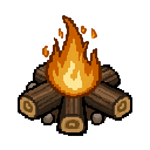
A campfire, a handful of villagers, a wild green valley — and a rival chief across the map who wants all of it.
Drag to look around, pinch to zoom, tap to act.
With a mouse, drag a box round your people to take them together, and right-drag to look around. That's every control in the game.
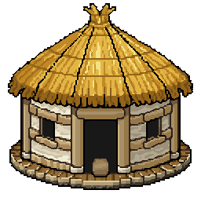
Tap a building, tap the ground — your villagers do the rest.
Everything grows from the Town Center. Raise it through three levels and each one unlocks new buildings, new soldiers, new tricks.
Lay roads to your buildings: one a road touches works 10% better, and says so in gold.
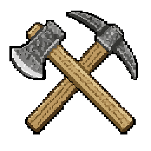
Tap a villager, then a forest, a hill or a gold seam — off they go. Wood builds, stone fortifies, gold pays for the sharp stuff.
Every valley is short on one resource, and your scouts name it on day one. Claim it before the rival does.
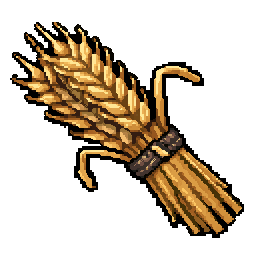
When the stores run dry, soldiers desert — villagers keep working, so the town can farm its way back. Plant farms by fertile soil, hunt the woods, fish where the fish jump.
Station a villager at a farm, lodge or quarry and it works all day — a fed village runs itself.
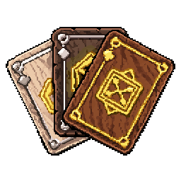
Every game deals you three Origin cards — keep one. It's the gift your people start with: faster axes, braver spears, deeper purses.
Your rival drafts one too. On Hard you won't know which…
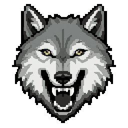
Wolves hunt the pines, bears own the deep forest, and boars charge anyone who steps too close.
Barbarian tribes — the Wolfskins, the Woadkin, the Sea Folk — land in boats, burn what they find, and leave. They raid your rival just as happily.
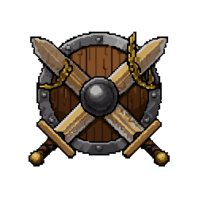
Defenders from the Barracks, archers from the Range, riders from the Stable, engines from the Siege Workshop. A new Barracks or Range sends its first soldier the day it stands.
Higher halls train fiercer troops — up to the Bronze Champion. Spears, bows and horses each cover another's weakness. Mix them.
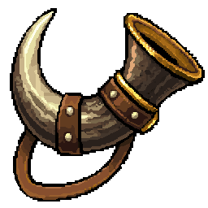
Muster your soldiers into an army under one banner — tap the banner and the whole host answers as one.
Sound the horn to call every idle blade to a spot. And when raiders reach the walls, raise the levy — the whole village takes up arms.
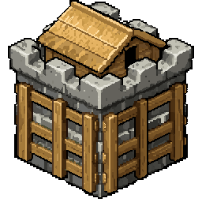
A watchtower shoots nothing by itself. Train archers at the Range, select them and tap the tower: two climb up, see twice as far and shoot everything in sight.
Walls turn raiders and gates let your own people through. Villagers shelter in the Town Center when trouble knocks.
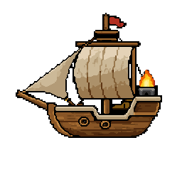
The Dock floats fishing boats, transport rafts for your soldiers, fire warships and bombard ships that break coasts.
Some valleys are islands, and the whole war crosses by sea. Old sailors swear something vast moves under open water…
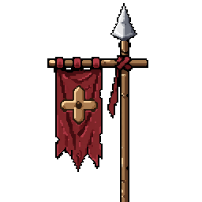
Across the valley a rival chief builds, schemes and remembers. Every game they roll a different temperament — hoarder, raider, sea-wolf.
Scout them early and watch how they probe your defenses. They are certainly watching yours.
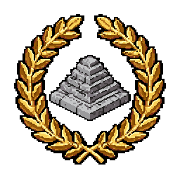
Break the rival's Town Center and the valley is yours.
Or out-build them entirely: raise an Ancient Wonder — one of ten monuments — and win without a war. Either road ends on the leaderboard.